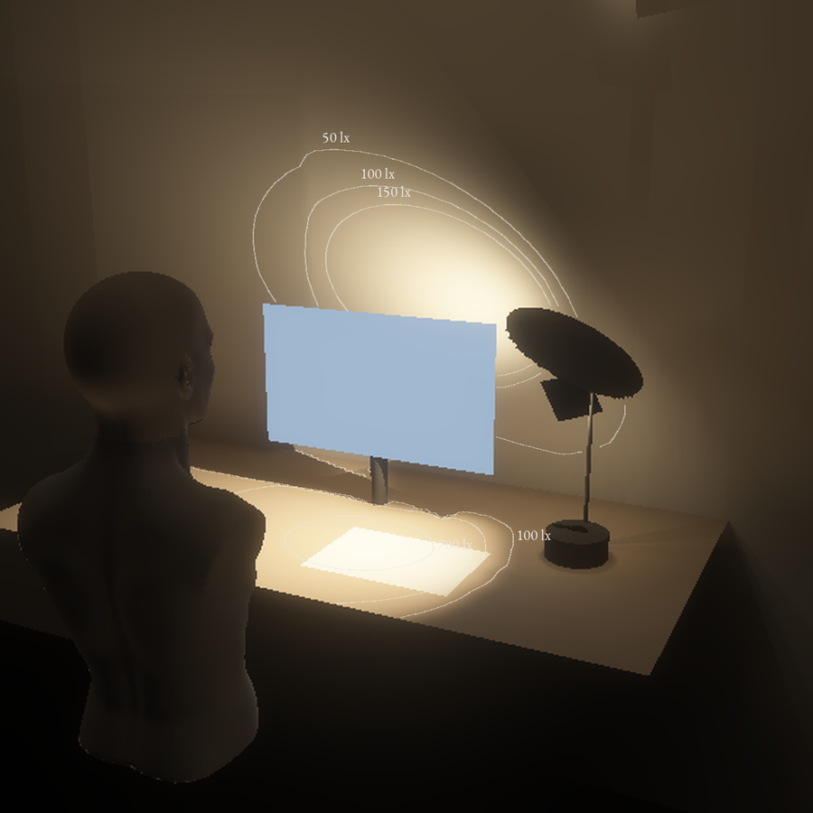
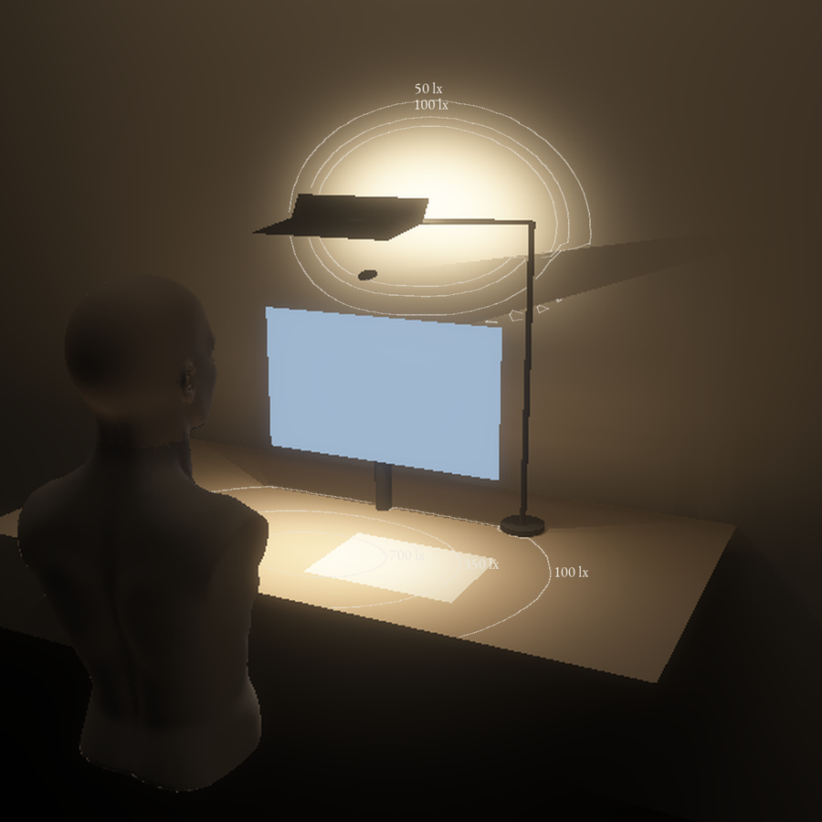
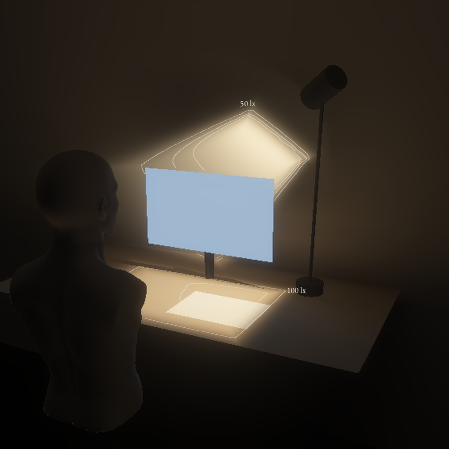

| Arbeidslys skalert til 350 lx på feltet | A Skiva | B Over | C Vindauge |
|---|---|---|---|
| Watt for 350 lx på feltettak 7,5 W | 3,47 | 3,56 | 5,78 |
| Timar arbeidslys per celle | 4,3 | 4,2 | 2,6 |
| Jamnheit på feltetreferanse 0,6 | 0,63 | 0,41 | 0,62 |
| Mot auget frå 25 cm, cd/m²F1 under 3000 | 672 | 1 124 | 155 |
| Veggen bak skjermen i arbeid, lxF6 100 til 150 | 105 | 134 | 123 |
| Skjermflata midt i overgangen, lxlys på skjermen | 226 | 243 | 9 |
| Største sprang i overgangen0 er glatt | 0,06 | 0,12 | 0,05 |
| Stemning: mot auget, cd/m²F5 under 500 | 242 | 110 | 76 |
| Stemning: veggen bak skjermen, lx | 117 | 108 | 72 |
| Ikkje prøvd ennokrava merkte ◆ | E2, M1, B1 | E2, M1, B1 | E2, M1, B1 |
Ingen av dei 18 kandidatane held alle krava når augehøgda og antakingane blir varierte. F1 for A og B heng på lobebreidda til folien, og ho blir målt først.